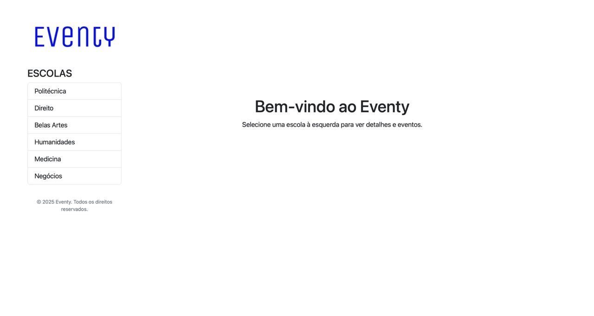
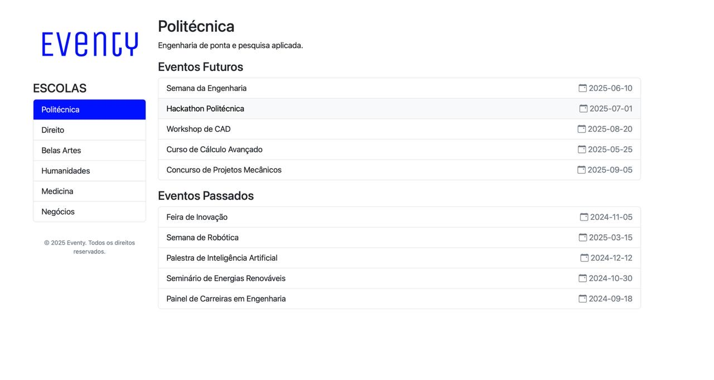
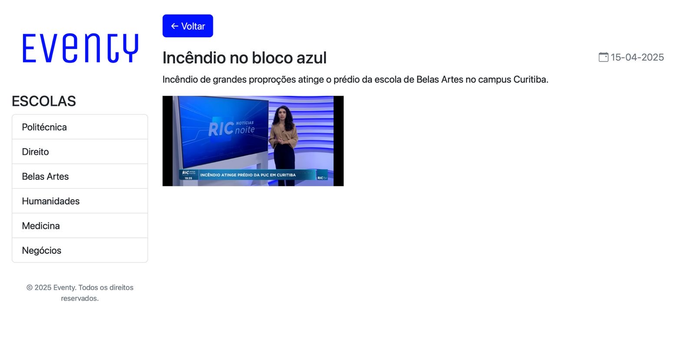
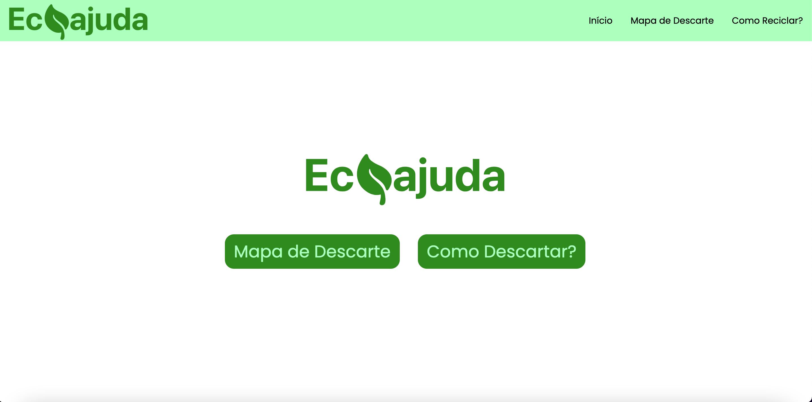
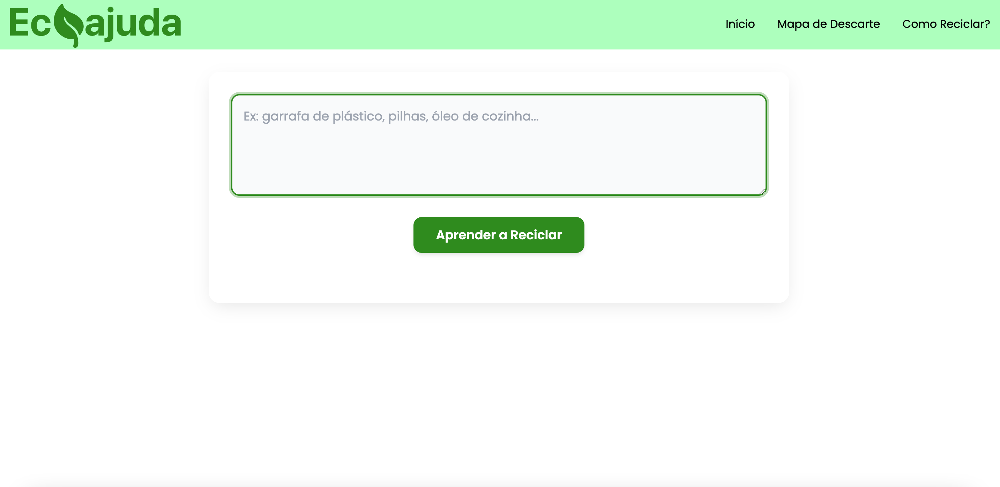
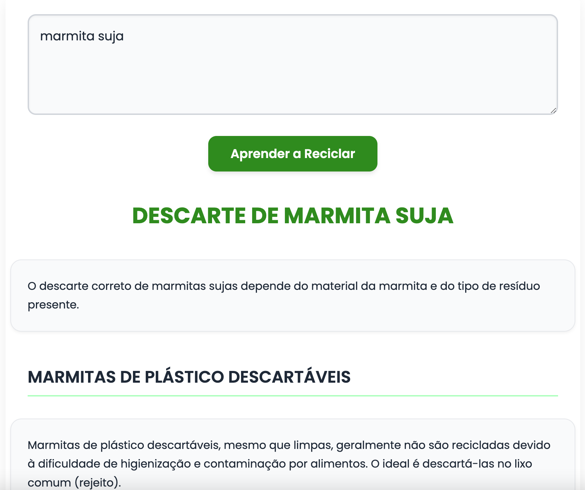
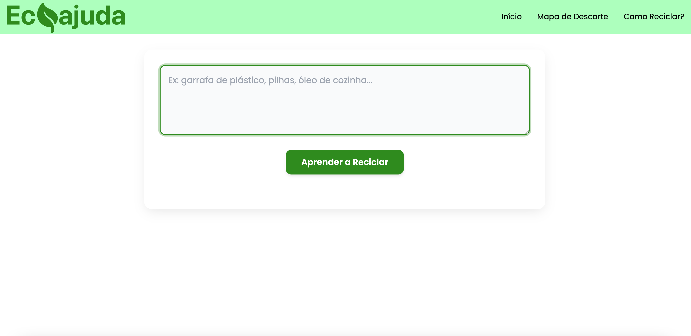
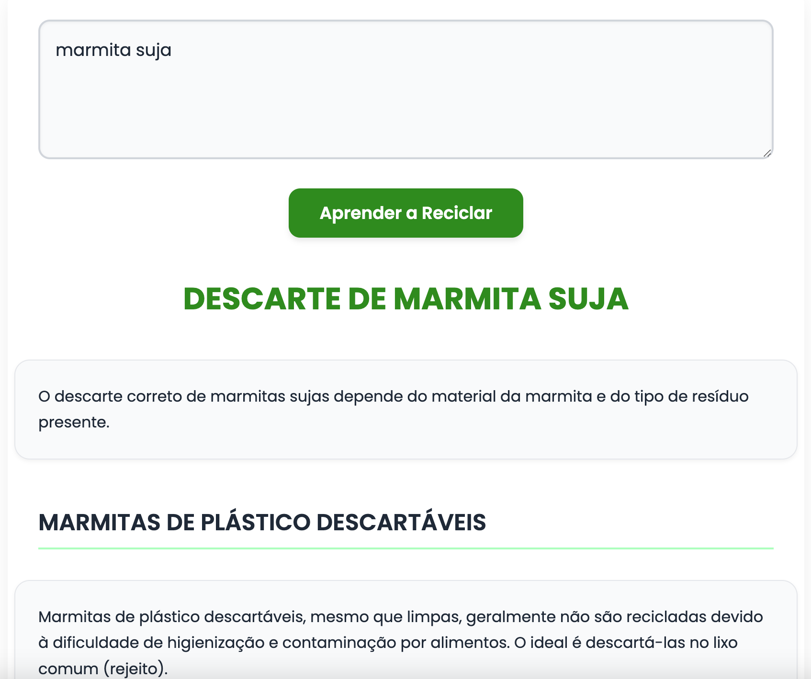

Experiencia criativa:
Jogo Idle Racer:
O Idle Racer foi um jogo do tipo click desenvolvido no Construct 3, no qual conta uma narrativa de um piloto de corrida que está buscando ser o melhor piloto de todos os tempos. O jogo se desenvolve ao redor dessa narrativa e o seu principal objetivo é ajudar o personagem principal a melhorar o seu carro para avançar para pistas mais difíceis.
O Idle Racer possui 3 pistas e possui 2 carros nos quais você irá obter.
O mecânismo do jogo é simples: ao clicar na tela, o corredor irá realizar uma volta na pistas, e ao completar uma volta, você receberá um pouco de dinheiro. Com o dinheiro recebido, você poderá escolher entre contratar um técnico para lhe auxiliar, que irá automatizar a função de click, ou fazer uma melhoria no seu carro, que fará com que seu carro percorra a volta mais rápido na pista ou fará com que ganhe mais dinehiro a cada volta completa.

Aplicativo multimídia Eventy:
O Eventy é um aplicativo multimídia desenvolvido em processing que visa ajudar a comunidade acadêmica a encontrar e divulgar palestra e eventos. Os princiaps objetivos do Eventy é manter uma fonte atualizada e confiável sobre as pelestras das universidades, como também fronecer fotos e materiais utilizados durante o evento, permitindo uma maior interação entre os acadêmicos.
Principais pontos do Eventy:
• Organização clara de eventos futuros e de eventos passados
• Divulgação de fotos e vídeos retirados ou usados durantes as pelestras
• Interface intuitiva de se navegar
A plataforma do processing foi utilizado como um web server.
  Web site EcoAjuda:
O EcoAjuda é um web site que visa ajudar a comunidade como um todo na rceiclagem de diferente materiais. O site possui um interface facíl de se navegar na qual possui duas principais funções: o mapa e a caixa de perguntas.
O mapa é uma das principais características pois mostra as localizações oficiais de descarte de lixos especiais como lixo eletrônico ou óleo de cozinha velho. Este mapa mostra os locais conforme a sua localização (se a função estiver autorizada em seu navegador) e ao clicar no local, o usuário poderá ver o nome do local.
A caixa de perguntas é uma funcionalidade de nosso site que está interligada ao Gemini, na qual o usuário pode perguntar as suas dúvidas sobre o descarte de certos materiais os quais ele não saiba em qual lixo descartr, como por exemplo embalagens de comida suja. Ao fazer a sua pergunta, aparecerá uma resposta lhe explicando o passo a passo de como descartar ou em qual lixo esse material deve ser jogado.
Link do projeto:
Visitar o EcoAjudaDiferênciais do EcoAjuda:
• Mapa interativo que mostra as localizações de lugares de descarte
• Caixa de perguntas diretamente ligada ao Gemini
 


